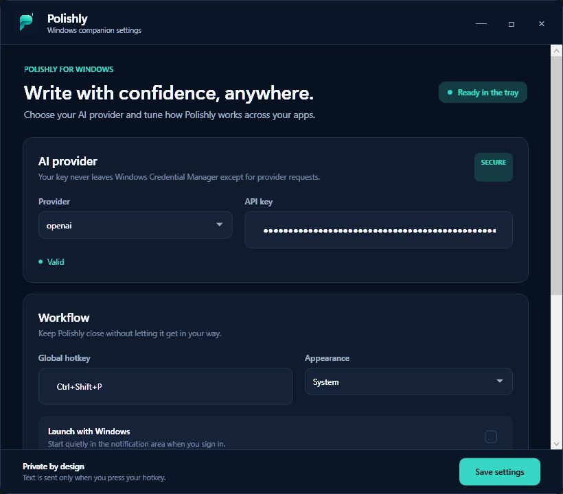
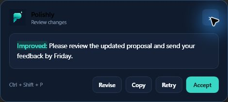

macOSMenu bar companion
Select text in Notes, Mail, Teams, Slack, or another accessible Mac app, then review the word-level diff before accepting it.
Polishly is a private AI rewriting tool for Mac and Windows. Select your words, press one shortcut, and review the change before anything is replaced.
Polishly feels at home in the system UI you already use, while keeping the same explicit, review-first rewrite flow.
Select text in Notes, Mail, Teams, Slack, or another accessible Mac app, then review the word-level diff before accepting it.


Use Ctrl + Shift + P from Windows text fields, review the teal-and-red diff, and accept the replacement in place.
No copying between apps. No invisible edits. You stay in control from selection to replacement.
Highlight a sentence or paragraph in a supported Mac or Windows text field.
Use ⌃⌥Space on Mac or Ctrl + Shift + P on Windows. Polishly opens beside the selection.
See a word-level diff, then replace the original in place or copy the result to your clipboard.
Polishly does not run a rewriting backend. When you invoke a rewrite, the selected text travels directly from your Mac or Windows device to the provider configured in Settings.
No Polishly account and no subscription required. Bring the platform you already work in.
Universal build for Apple silicon and Intel. Developer ID signed and notarized by Apple.
macOS 14+ · free · MIT licensed⌃⌥Space.Need a free provider key? Create a Groq key or read the setup guide.
A native tray companion with a redesigned settings surface, Windows Credential Manager storage, and Ctrl + Shift + P rewrite review.
Choose a built-in tone or tell your model exactly what you want.
Polishly replaces a recurring app subscription with a free local utility connected directly to the provider you choose.
Yes. The app is free and open source under the MIT license. If you connect a paid AI provider, you pay that provider directly for your own usage.
Polishly reads the selection only after you press its hotkey. The text then goes directly from your Mac or Windows device to the provider configured in Settings. Polishly has no cloud service in the middle.
Polishly works with accessible text fields on both platforms. Mac uses Accessibility, while Windows uses UI Automation and guarded clipboard fallback where needed.
OpenAI, Anthropic, Groq, and Cerebras. You choose the provider and model in Polishly Settings.
No. Demo mode lets you try the selection, review, and accept workflow without sending text off your device.
Mac and Windows require text-access permissions for Polishly to read what you explicitly select and place an accepted rewrite back into the active field. Polishly does not continuously scan what you type.
Free, open source, and connected to the model you choose.